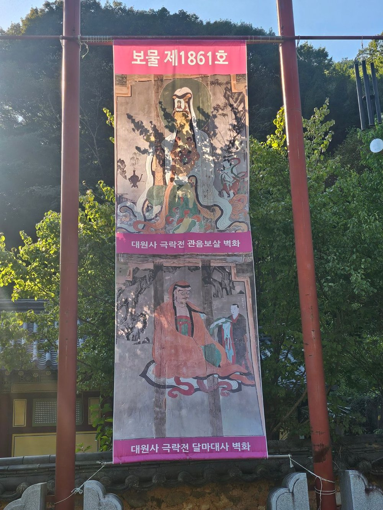

5.5km 꽃길을 지나
도착하는 곳
1980년부터 심은 왕벚나무 4,000여 그루가 ‘한국의 아름다운 길 100선’에 오른 꽃 터널을 이룹니다. 해마다 봄이면 이 길에서 보성벚꽃축제가 열립니다.
천년고찰 대원사, 그리고 역대 스님들의 부도를 모셔 온 터에 자리한 꽃길숲 이야기입니다.
꽃길숲이 자리한 곳은 대원사 역대 스님들의 부도(스님의 사리나 유골을 모신 탑)를 모셔 온 터입니다. 오랜 세월 스님들이 잠들어 지켜 온 그 자리에, 이제 신도님들을 함께 모십니다.
천년고찰의 스님들과 한 숲에서 머무는 성스러운 자리 — 꽃길숲이 다른 수목장과 다른 가장 큰 이유입니다.
아도화상이 꿈에 나타난 봉황의 인도로 목숨을 구한 뒤, 봉황이 알을 품고 있는 형상의 ‘봉소형국(鳳巢形局)’을 찾아 산 이름을 천봉산이라 하고 절을 지었다고 전해집니다.
경내 안내판에는 “벚꽃길은 풍수로 치면 탯줄에 해당되고 절터는 모태에 해당된다”고 적혀 있습니다. 5.5km 벚꽃길 끝에 이르는 길 자체가 예로부터 의미 있는 길이었다는 이야기입니다.

백제 무녕왕 3년(503년) 아도화상이 창건한 천년고찰입니다. 조선 영조 때 다시 지은 극락전은 1948년 여순사건과 한국전쟁을 거치며 다른 전각이 모두 불탔을 때 유일하게 남은 건물로, 전라남도 유형문화재 제87호입니다. 극락전 벽화(관음보살·달마대사) 2점은 2015년 보물 제1861호로 지정되었습니다. 2001년 문을 연 티벳박물관도 운영하고 있습니다.



출처: 대원사 홈페이지(daewonsa.or.kr) 연혁·문화재·참배안내 기준
떠난 이의 평안을 비는 천도 기도와 백일기도, 죽음체험 공간, 템플스테이까지 — 꽃길숲을 품은 대원사의 기도를 소개합니다.
자세히 보기 →꽃길을 걸어 와, 차 향과 스님의 기도 곁에서 쉬어 가는 곳.
꽃길숲 수목장은 이 세 가지가 어우러진 자리에 있습니다.
1980년부터 심은 왕벚나무 4,000여 그루가 ‘한국의 아름다운 길 100선’에 오른 꽃 터널을 이룹니다. 해마다 봄이면 이 길에서 보성벚꽃축제가 열립니다.
대원사에는 국가중요농업유산으로 지정된 350여 년 된 고차수 군락지가 있습니다. 해마다 5월 5일 한·중·일 차 문화 교류 행사 ‘보성 다향제’가 열리고, 템플스테이에서는 차 한 잔과 함께 쉬어 갈 수 있습니다.
대원사는 떠난 이의 평안을 비는 천도 기도를 오래 이어 온 절입니다. 해마다 백일기도를 올리고, 삶과 죽음을 돌아보는 죽음체험 공간도 있습니다.
대원사를 세운 아도화상은 꿈에 나타난 봉황의 인도로 목숨을 구한 뒤, 석 달 동안 호남의 산을 헤매다 봉황이 알을 품은 형상인 봉소형국(鳳巢形局)을 찾았다고 전해집니다. 그 산을 천봉산이라 부르고 절을 지은 것이 대원사의 시작입니다.
1,500여 년 동안 이어져 온 그 품 안에, 꽃길숲 수목장이 자리합니다.
꽃길숲 이야기 더 보기 →